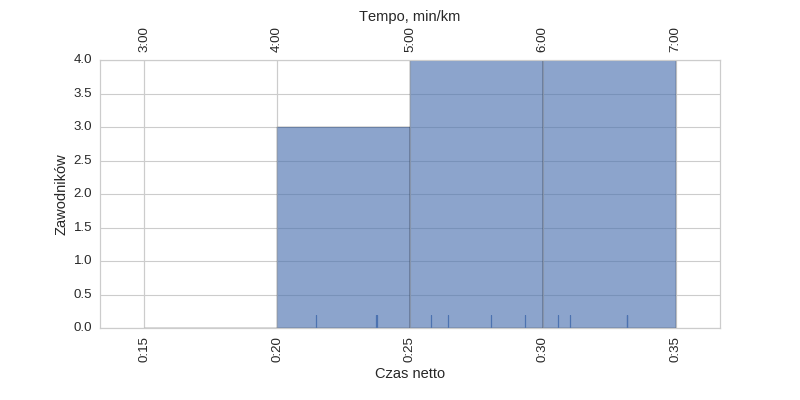
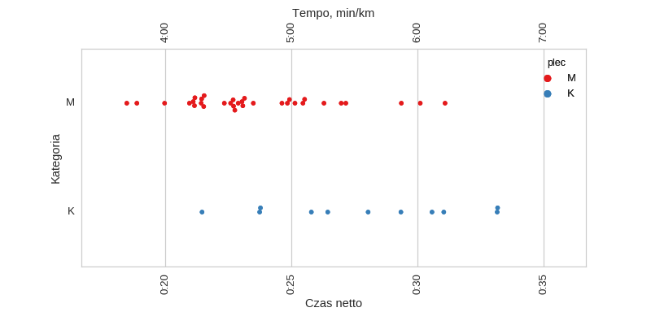
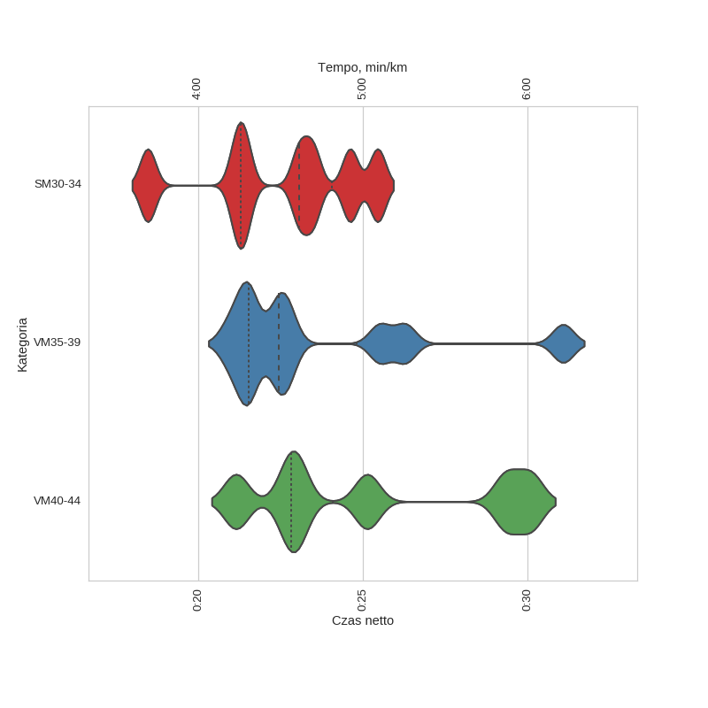
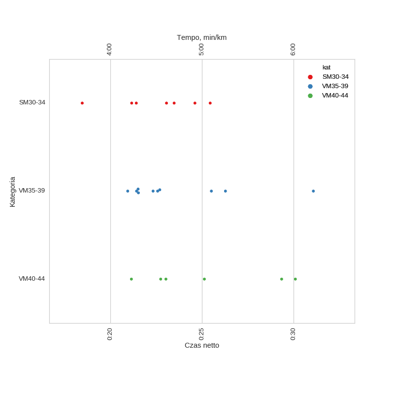

ParkRun Ursynów (2016-03-19)
Histogramy
Klasyfikacja generalna

| mean | std | min | 25% | 50% | 75% | max | |
|---|---|---|---|---|---|---|---|
| czas | 0:24:38 | 0:03:43 | 0:18:28 | 0:21:31 | 0:23:36 | 0:26:34 | 0:33:10 |
kobiety

| mean | std | min | 25% | 50% | 75% | max | |
|---|---|---|---|---|---|---|---|
| czas | 0:27:51 | 0:03:57 | 0:21:27 | 0:24:46 | 0:28:02 | 0:30:48 | 0:33:10 |
mężczyźni
| mean | std | min | 25% | 50% | 75% | max | |
|---|---|---|---|---|---|---|---|
| czas | 0:23:33 | 0:02:59 | 0:18:28 | 0:21:26 | 0:22:53 | 0:25:08 | 0:31:05 |
Wykresy rybkowe
wg płci

| czas | count | |||||||
|---|---|---|---|---|---|---|---|---|
| mean | std | min | 25% | 50% | 75% | max | ||
| plec | ||||||||
| K | 0:27:51 | 0:03:57 | 0:21:27 | 0:24:46 | 0:28:02 | 0:30:48 | 0:33:10 | 11 |
| M | 0:23:33 | 0:02:59 | 0:18:28 | 0:21:26 | 0:22:53 | 0:25:08 | 0:31:05 | 33 |
wg kategorii


| czas | count | |||||||
|---|---|---|---|---|---|---|---|---|
| mean | std | min | 25% | 50% | 75% | max | ||
| kat | ||||||||
| SM30-34 | 0:22:31 | 0:02:22 | 0:18:28 | 0:21:17 | 0:23:04 | 0:24:03 | 0:25:27 | 7 |
| VM35-39 | 0:23:35 | 0:03:10 | 0:20:57 | 0:21:31 | 0:22:27 | 0:24:48 | 0:31:05 | 10 |
| VM40-44 | 0:25:15 | 0:03:41 | 0:21:09 | 0:22:49 | 0:24:05 | 0:28:17 | 0:30:06 | 6 |
Menu
HistogramyWykresy rybkowe
∙ wg płci
∙ wg kategorii
Dystans: 5.0 km
Liczba uczestników: 44
Wygenerowano: 2016-03-28 20:30:18.695500